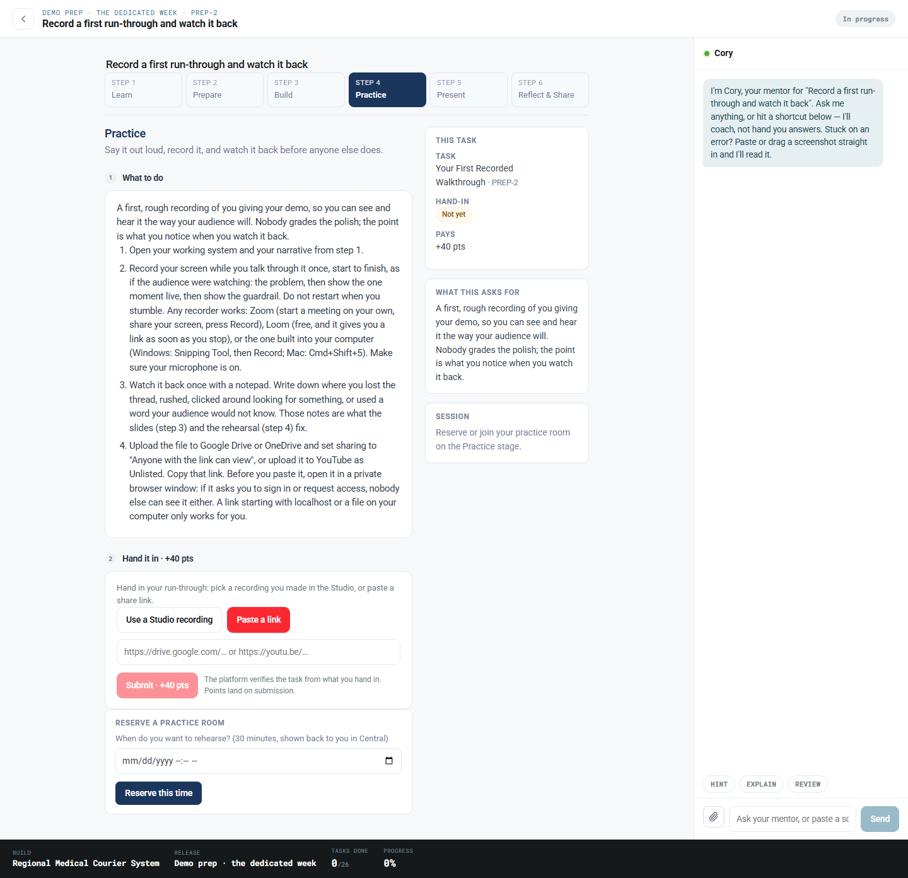
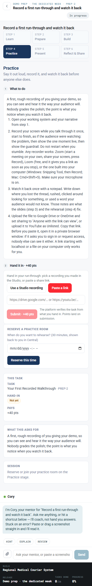
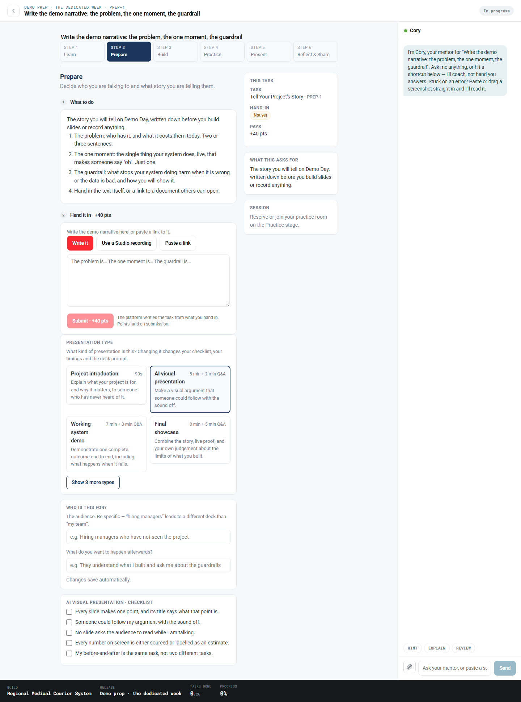
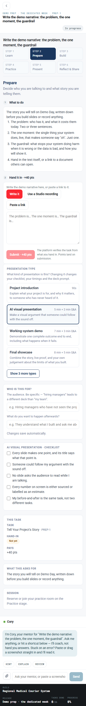
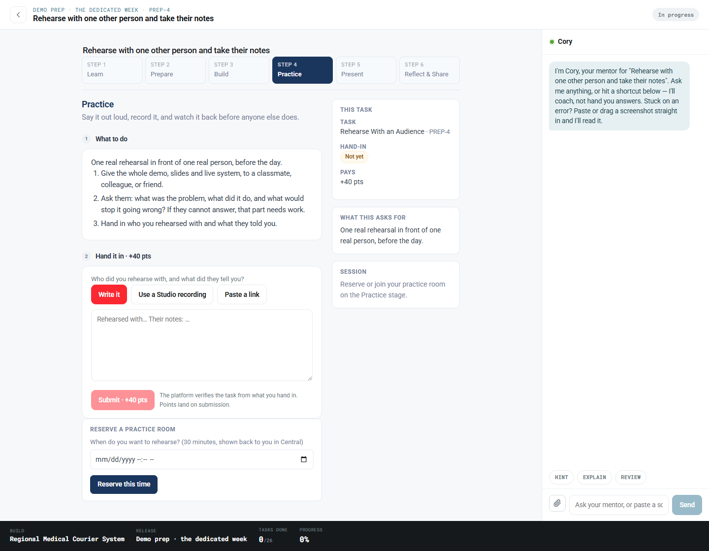
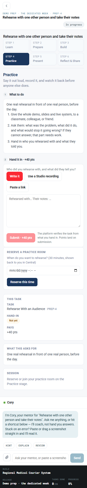
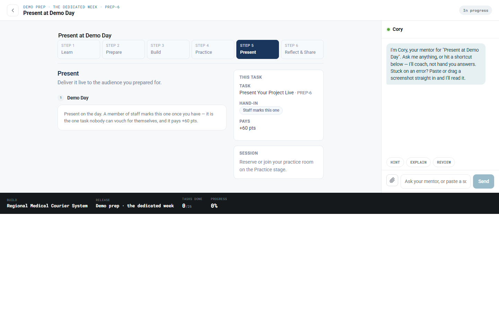
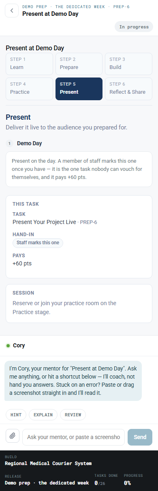

Real screenshots of the deployed Studio at 1440 and 390, captured 2026-10-06 against
www.refactored.ai, signed in as a participant.
These are photographs of production as it was at capture time. Two of the findings below are fixed in the same change that adds this document, so the screenshots deliberately still show the old behaviour — that is the evidence the defect was real.
PREP-2's step 4 reads "Upload the file to Google Drive or OneDrive and set sharing to 'Anyone with the link can view', or upload it to YouTube as Unlisted." Directly beneath it sits Use a Studio recording, which takes a recording the platform already holds.
The guide copy was written when a link was the only way in. It kept saying so for a day after that stopped being true. A browser probe confirmed both strings on the same rendered page.
Fixed: the hand-in advice now leads with the Studio room and keeps uploading as the fallback for recordings made elsewhere.
Visible in the mobile shot below: Paste a link carries the selected-state treatment and Use a Studio recording is the quiet one. The form opened on the old path, so the styling advertised it.
Fixed: PREP-2 and PREP-5 now open on the picker. A student who recorded elsewhere is one click from the URL box, and the picker's empty state says so.
The first capture run sliced the instructions mid-sentence at 390px, which looked like a serious
mobile defect. It was not. The workspace puts its main column in overflow-y: auto, and a
fullPage screenshot captures the box rather than the content.
Measured in the browser rather than argued about: main.rt-mid reports
clientHeight 351 → scrollHeight 1990 with overflow-y: auto — it scrolls, and
a real user reads all of it. The capture script now expands inner scrollers before shooting, which is
why the images below are complete.
The hand-in form, the practice-room reservation, and the task aside. Both defects above are visible here.


Three ways in: write it, use a Studio recording, or paste a link. Prose is the default here, which is right for a narrative.




Staff-marked, so it correctly offers no hand-in form at all — only an explanation of why. This is the regression that matters most: a student must never be able to mark their own presentation.


presentationStudio.css carries
:focus-visible on every button and link, plus prefers-reduced-motion and a
dark-mode block scoped twice because the theme attribute lands on two elements.TemplateChooser is a real
role="radiogroup" of real buttons with aria-checked.The screenshots above predate the two fixes in this change. They should be retaken after it deploys, to confirm the guide leads with the Studio room and the picker is the default on PREP-2 and PREP-5.
Re-run with
node scripts/captureStudioProduction.js (needs a participant token at
scripts/.ali_jwt.txt).